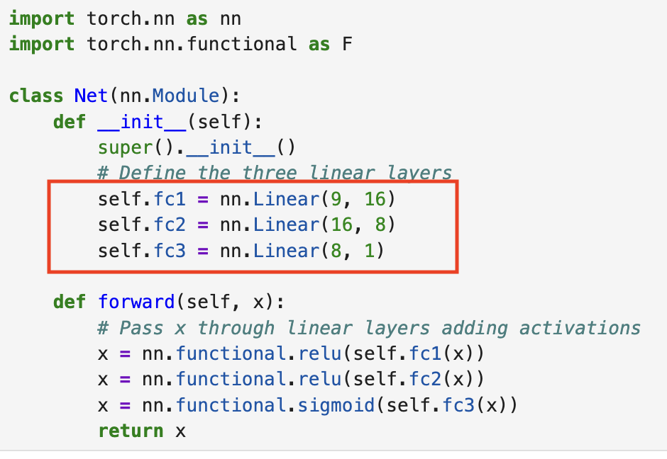
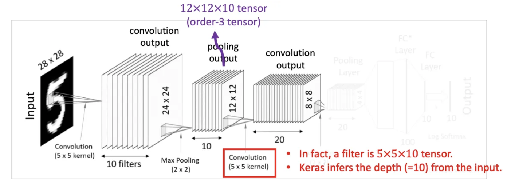

UNIVERSITE PARIS VIII - VINCENNES-SAINT-DENIS
DIRECTION DES SYSTEMES D'INFORMATION ET DU NUMERIQUE (DSIN)
Atelier IA
4. Intermediate Deep Learning with PyTorch (1)
sanghun BANG
Le 4 février 2025
Sommaire
- L'approche POO pour définir l'architecture du modèle.
- Optimiseurs et entraînement
- Disparition et explosion des gradients
- Traitement des images avec PyTorch
- Réseaux neuronaux convolutifs
- Entraînement de classificateurs d'images
L'approche POO pour définir l'architecture du modèle.
L'approche POO pour définir l'architecture du modèle.
= 9 X 16 + 16(biais) = 160
L'approche POO pour définir l'architecture du modèle.
= 16 X 8 + 8(biais) = 136
L'approche POO pour définir l'architecture du modèle.
= 8 X 1 + 1 (biais) = 9
L'approche POO pour définir l'architecture du modèle.

= 160 + 136 + 9 = 305 paramètres
Optimiseurs et entraînement
- Objectif : L'optimiseur ajuste les poids (weights) du modèle pour minimiser la fonction de perte (loss function).
- Fonction : L'optimiseur utilise principalement l'algorithme de descente de gradient (Gradient Descent) pour mettre à jour les poids. Il peut aussi ajuster des hyperparamètres comme le taux d'apprentissage, le momentum et le taux d'apprentissage adaptatif.
Optimiseurs et entraînement
Stochastic Gradient Descent (SGD)
- La mise à jour dépend du taux d'apprentissage.
- Simple et efficace, pour des modèles de base.
- Rarement utilisé en pratique.
Optimiseurs et entraînement
Adaptive Gradient (Adagrad)

- Adapte le taux d'apprentissage pour chaque paramètre
- Bon pour les données rares
- Peut réduire le taux d'apprentissage trop rapidement
Optimiseurs et entraînement
Root Mean Square Propagation (RMSprop)
- Mise à jour pour chaque paramètre en fonction de la taille de ses gradients précédents
Optimiseurs et entraînement
Adaptive Moment Estimation(Adam)
- Probablement le plus polyvalent et le plus largement utilisé
- RMSprop + momentum des gradients
- Souvent utilisé comme optimiseur de référence
Optimiseurs et entraînement
Exercice (pytorch_oop_otimizer.ipynb)
Disparition et explosion des gradients
Disparition du gradient (Vanishing Gradient)
- Les gradients deviennent de plus en plus petits lors de la rétropropagation.
- Les couches précédentes reçoivent de faibles mises à jour des paramètres.
- Le modèle n'apprend pas.
Disparition et explosion des gradients
Explosiion du gradient(Explodiing gradient)
- Les gradients deviennent de plus en plus grands.
- Les mises à jour des paramètres sont trop grandes.
- L'entraînement diverge.
Disparition et explosion des gradients
Solution
- Bonne initialisation des poids
- Bonnes fonctions d'activation
- Normalisation par lots
Disparition et explosion des gradients
L'initialisation de He
- L'initialisation de He est efficace pour l'initialisation des poids. Elle initialise chaque poids en utilisant une distribution normale dont l'écart type est ci-dessous .
- Cela permet de réduire le problème du gradient qui disparaît, notamment avec des fonctions d'activation comme ReLU.
Disparition et explosion des gradients
ReLU
- f(x) = max(0, x) => problème : Neurones mourants.
- Leaky ReLU : une fonction qui permet aux valeurs négatives d'avoir une petite pente au lieu de zéro.
- Cependant, avec l'initialisation de He, on peut éviter le problème des poids trop grands ou trop petits, ce qui aide à résoudre ce problème.
Disparition et explosion des gradients
ELU
- Lorsqu'on a une valeur x inférieure à zéro, l'ELU résout le problème des neurones mourants, mais son coût de calcul est plus élevé que celui de ReLU.
- Selon le réseau ou le dataset, ReLU ou Leaky ReLU peuvent être plus appropriés.
Disparition et explosion des gradients
Normalisation par lots
- Stabilité de l'entraînement : La distribution des données est maintenue de manière homogène à travers les couches, ce qui rend l'entraînement plus stable.
- Accélération de la vitesse d'apprentissage : Étant donné que la normalisation est appliquée, il est possible d'augmenter le taux d'apprentissage et d'optimiser plus rapidement.
- Prévention du surapprentissage : Batch Normalization apprend par mini-batch, ce qui offre un léger effet de régularisation et peut aider à prévenir le surapprentissage.

Disparition et explosion des gradients
Exercice (weightinit_batch.ipynb)
Réseaux neuronaux convolutifs
Convolutional Layer
Réseaux neuronaux convolutifs
Convolutional Layer(Filter)

Réseaux neuronaux convolutifs
Convolutional Layer(Stride)
Réseaux neuronaux convolutifs
Convolutional Layer(Padding)

Réseaux neuronaux convolutifs
Pooling Layer
Réseaux neuronaux convolutifs
Pooling Layer(Max pooling)
Réseaux neuronaux convolutifs
Second convolutioanl layer

- On utilise 20 filtres tensoriels de taille 5x5x10 sur le tenseur 12x12x10 obtenu de la couche de pooling précédente. Cela permet d'obtenir 20 résultats, chacun de taille 8x8.
Réseaux neuronaux convolutifs
second pooling layer
Réseaux neuronaux convolutifs
Flattern(vectorization)
Réseaux neuronaux convolutifs
Fully-Connected Layers(Dense Layers)
Réseaux neuronaux convolutifs
Ex: la taille du tenseur de sortie
---> output 32 X 32 X 32
---> 1er maxpool layer : 16 X 16 X 32
---> second Convolution layer : 16 X 16 X 64
---> second maxpool layer : 8 X 8 X 64
---> 1st deimension vector 8 X 8 X 64 = 4096
Réseaux neuronaux convolutifs
Ex: la taille du tenseur de sortie
(entree X H noyau X L noyau +1 ) X sortie= (3X3X3+1)X32 = 28X32 = 896
---> (32X3X3+1)X64 = 289X64 = 18,496
---> Total des paramètres : 896 + 18,496 = 19,392
Rntraînement de classificateurs d'images
Exercice
Exercice1 (cnn_ex.ipynb)
Exercice2 (cnn_with_data_accuracy.ipynb)
Prochain atelier
- 1. Introduction to Natural Language Processing in Python
- 2. Introduction to LLMs in Python
- 3. Working with Hugging Face
- 4. Intermediate Deep Learning with PyTorch (1)
- 5. Intermediate Deep Learning with PyTorch (2)
- 6. Deep Learning for Text with PyTorch
- 7. Building Chatbots in Python
- 8. Working with Llama 3
- 9. Transformer Models with PyTorch
- 10. Developing LLM Applications with LangChain
- 11. Retrieval Augmented Generation (RAG) with LangChain
- 12. Distributed AI Model Training in Python
- 13. Beyond LLMs: Test Time Training, Differential transformer, Titans